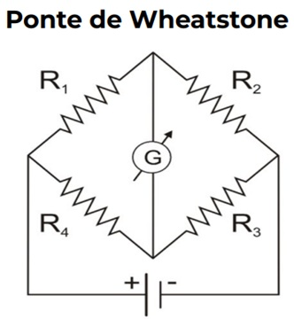
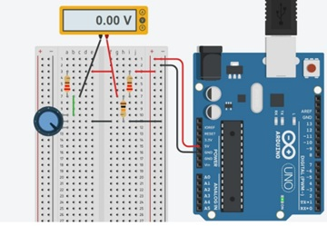
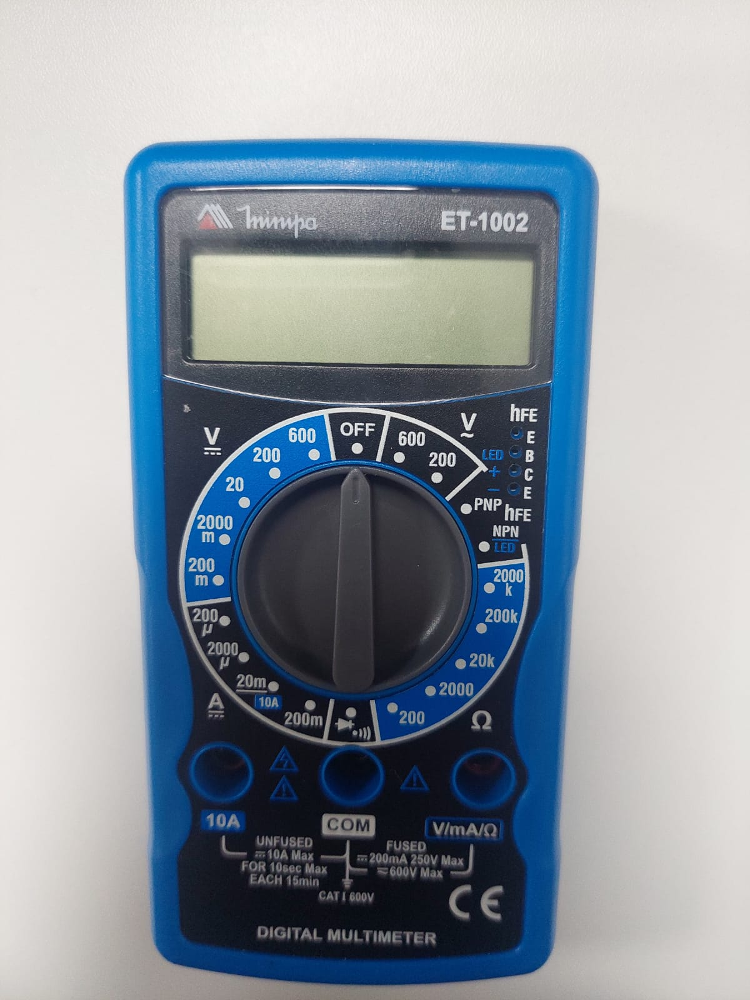

Instrumentação
Ponte de Wheatstone: mede pequenas variações de resistência.

Quando equilibrada: R1 × Rx = R2 × R3.

Multímetro: mede tensão, corrente e resistência.

Continuidade: indica circuito fechado com resistência próxima de zero.